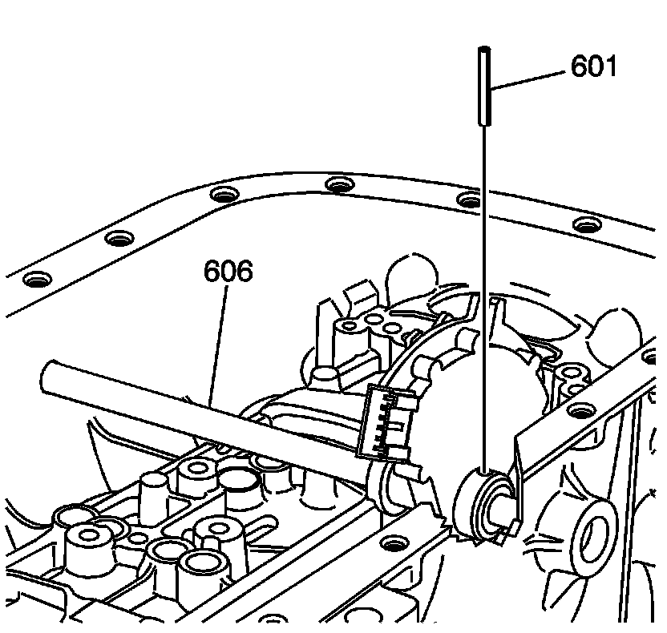
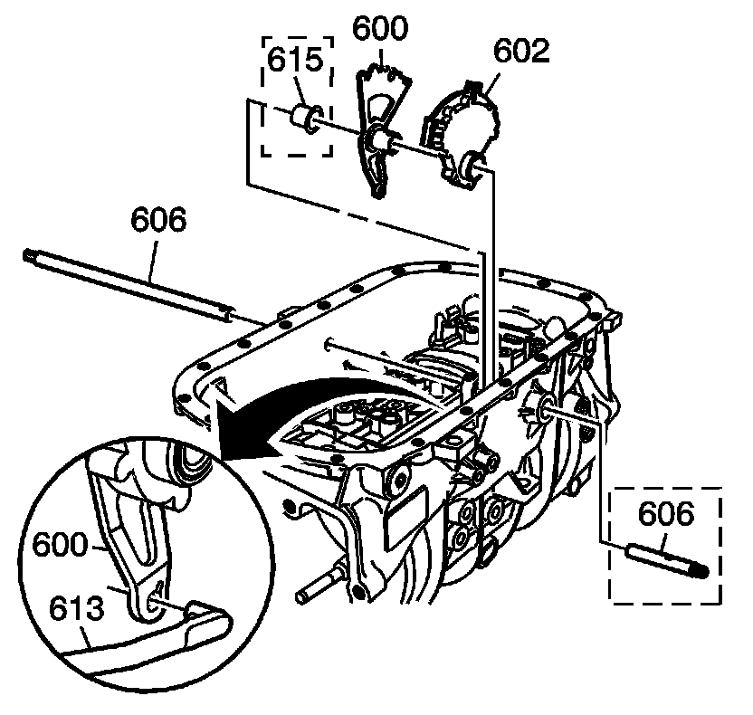
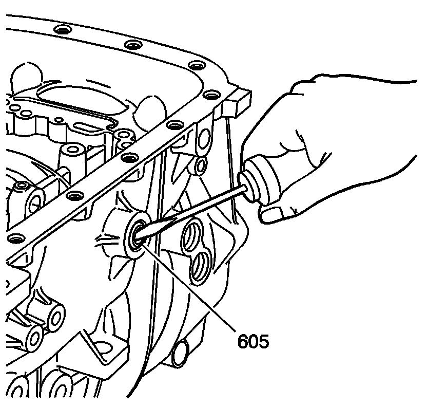
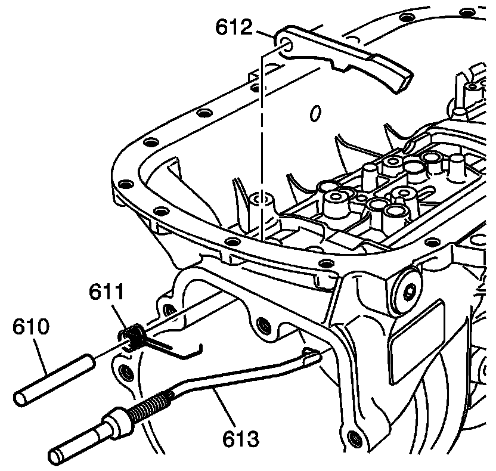
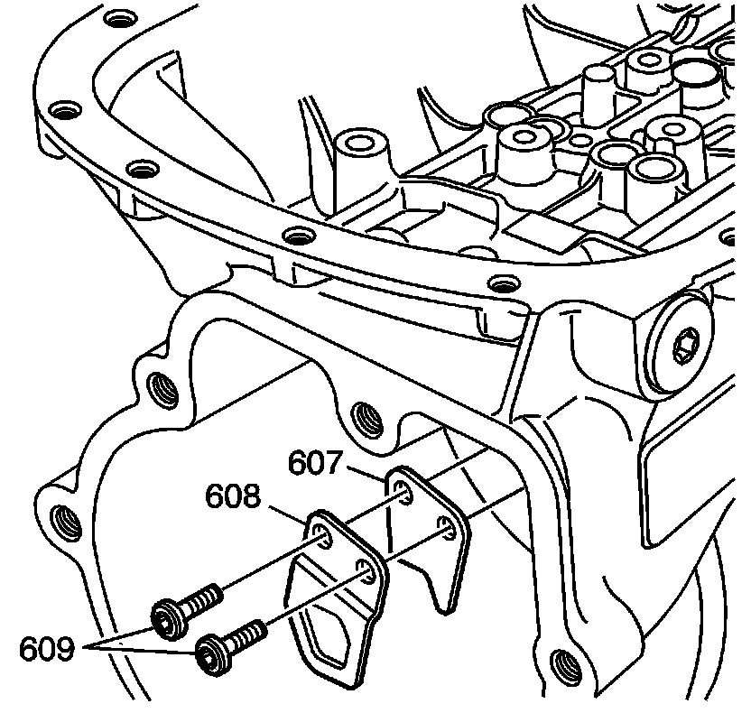
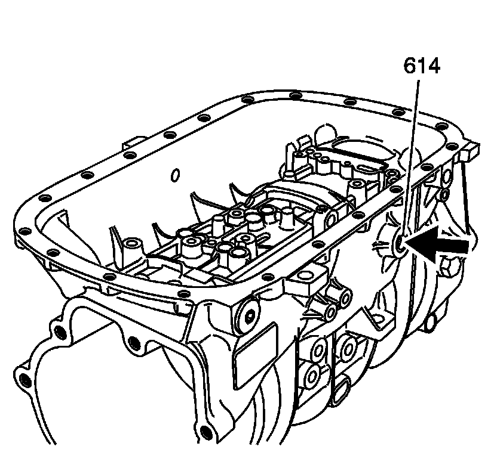

Parking System Components Removal
Parking System Components Removal

1. Rotate the transmission 90 degrees. Remove the manual shaft detent lever pin (601) from the case.

2. Remove the manual shift shaft (606) from the case.
3. Disconnect the park pawl actuator assembly (613) from the manual shaft detent lever (600).
4. Remove the manual shaft detent lever (600), spacer (615) - some models and the manual shaft shift switch assembly (602) from the case.

5. Use a small screwdriver in order to pry the manual shaft shift seal (605) from the case.

6. Remove the park pawl actuator assembly (613) from the case.
7. Remove the park pawl shaft (610), park pawl spring (611) and the park pawl (612) from the case.

8. Remove the park pawl actuator bracket bolts (609) from the case.
9. Remove the park pawl actuator brackets (607, 608) from the case.

10. Inspect the cup plug (614) for signs of leaks.